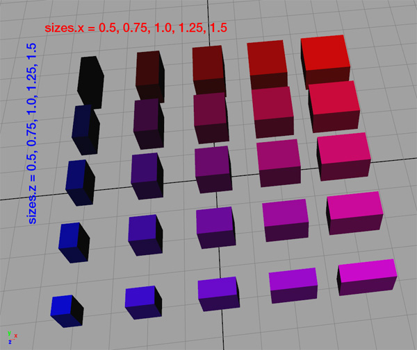
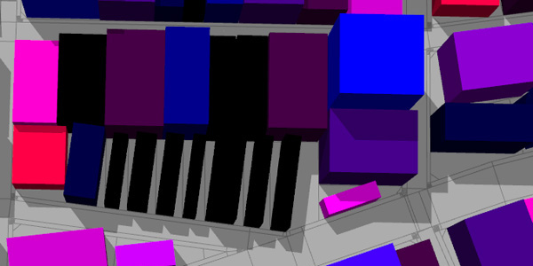
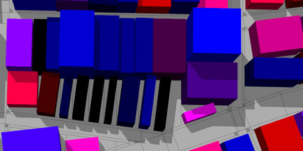

assetApproxRatio function
searchQuery string Search query to apply on list of all files in the workspace. See fileSearch / filesSearch for details about the syntax.
axesRatio string
| "xy", "xz", "yz", "xyz" | Axes for the currect scope. |
n float Number (integer >= 1) of assets to consider (one is randomly picked out of the n best assets).
Returns an asset with one of the best n size fits (according to axesRatio).
This function returns one of the n best assets of the best ratio, from the files specified by searchQuery, according to the specified axesRatio string.
Related
Examples
Inserting assets based on their approximate ratio
The goal is to insert assets from a pool, depending on their (physical) size ratio. The pool of assets is seen in the following image. Colors are (only) used to visually emphasize the physical size ratio.

Since the assets are color coded with their ratio, it is visible that "long" and "wide" Lots utilize black and pink assets, while "square-ish" Lots utilize red and blue assets.
Note the color variations in the next two images.
n = 1: "best ratio"

Lot -->
innerRectangle(scope) { shape : Insert }
Insert -->
alignScopeToAxes(y)
s('1,0,'1)
i(assetApproxRatio("/myProject/assets/cube_*.obj", "xz", 1))
n = 3: "choose randomly one of the best three ratios"

Lot -->
innerRectangle(scope) { shape : Insert }
Insert -->
alignScopeToAxes(y)
s('1, 0, '1)
i(assetApproxRatio("/myProject/assets/cube_*.obj", "xz", 3))